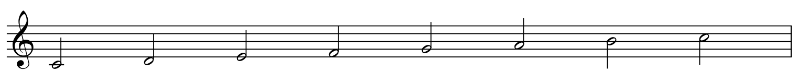
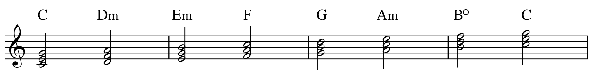
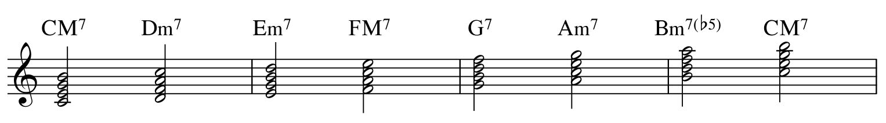

미–파
사이에 다른 건반이 없어요. 바로 이웃한 두 건반이므로 반음입니다.
한 음의 발견부터 나만의 멜로디까지.
알파카의 작업실에서 차근차근 시작해 보세요.

작은 아이디어를 작품으로.
두 음 사이의 거리를 배워요.
선택한 음에서 새로운 화성을.
원하는 순간에 도착하는 음악.
필요할 때 꺼내보는 배움.
작업 중 바로 꺼내보는 키 노트.
중요한 음을 함께 선택하세요. 코드톤과 텐션으로 품을 수 있는 코드를 찾아드려요.
건반을 눌러 멜로디의 가능성을 찾아보세요.
결과 카드를 누르면 코드 소리를 들을 수 있어요.원하는 시간과 마디를 입력하면 일정한 템포를 계산합니다.
1마디 1박은 0:00입니다. 목표 위치는 해당 박이 시작되는 순간입니다. 6/8·9/8은 8분음표 한 개를 1박으로 선택하며, 결과 BPM은 4분음표(♩) 기준입니다.
| 입력 BPM | 실제 도착 시간 | 목표와 차이 |
|---|
+는 목표보다 늦게, −는 일찍 도착합니다. 템포·박자가 일정하고 못갖춘마디가 없는 경우를 기준으로 계산합니다.
자주 쓰는 단축키부터, 알아두면 편한 작은 기능까지. Mac용 Logic Pro의 단축키 노트입니다.
별표로 나만의 참고 목록을 만들고,
작업 중 필요한 키를 바로 찾아보세요.
Apple의 미국 기본 프리셋 기준입니다. 사용자 설정·Logic 버전·활성화된 편집 창에 따라 다를 수 있어요. 다르게 작동하면 Logic에서 ⌥ K를 눌러 아래 ‘명령 이름’으로 검색하세요. 별표는 이 브라우저에 저장됩니다.
참고: Apple Logic Pro 사용자 설명서 · 자주/보조 분류는 작곡·MIDI 편집 흐름을 기준으로 정리했습니다.
음정의 뜻부터 도수 구하기까지, 하나씩 살펴보세요.
음정은 음과 음 사이의 거리입니다.
음정을 구할 때는 순서를 지켜서 구하는 것이 좋습니다.
‘도’와 ‘도’처럼 같은 위치에 있는 음은 1도라고 합니다.
따라서 ‘도–미’는 3도입니다.
카드를 누르면 두 음이 피아노 소리로 동시에 울립니다. 마지막 ‘도’는 한 옥타브 위의 도입니다.
피아노: Salamander Grand Piano · Alexander Holm · 샘플 출처
완전음정 그룹과 장음정 그룹으로 구분합니다.
위의 연보라색 악보 카드와 연결해서 기억해 보세요.
위의 연파랑색 악보 카드와 연결해서 기억해 보세요.
여기서는 도수가 속하는 그룹을 구분합니다. 이어서 기본 음정과 간격의 변화를 살펴보세요.
이 수업에서는 도에서 시작해 임시표 없는 도·레·미·파·솔·라·시·높은 도로 향하는 음정을 기본 음정으로 삼습니다.
두 음 사이를 음이름 순서로 따라가며 미–파와 시–도 구간이 몇 개 포함되는지 셉니다. 두 음 사이의 전체 거리를 반음 단위로 센 숫자와는 다릅니다.
| 기본 음정 | 도수 | 미–파·시–도 구간 | 음정 이름 |
|---|---|---|---|
| 도–도 | 1도 | 0개 | 완전1도 |
| 도–레 | 2도 | 0개 | 장2도 |
| 도–미 | 3도 | 0개 | 장3도 |
| 도–파 | 4도 | 1개 | 완전4도 |
| 도–솔 | 5도 | 1개 | 완전5도 |
| 도–라 | 6도 | 1개 | 장6도 |
| 도–시 | 7도 | 1개 | 장7도 |
| 도–높은 도 | 8도 | 2개 | 완전8도 |
1–3도: 0개 · 4–7도: 1개 · 8도: 2개
도–파에는 미–파가 들어가고, 도–높은 도에는 미–파와 시–도가 모두 들어갑니다.
바로 이웃한 두 건반 사이의 거리는 반음입니다. 중간에 건반 하나가 있으면 온음입니다.
사이에 다른 건반이 없어요. 바로 이웃한 두 건반이므로 반음입니다.
미–파와 마찬가지로 바로 이웃한 두 건반입니다.
사이에 검은 건반 하나가 있어요. 온음입니다.
사이에 B(시) 건반 하나가 있어요. 중간 건반이 흰색이어도 온음입니다.
미–파 사이에는 검은 건반이 없고, 도–레 사이에는 검은 건반 하나가 있습니다. 다만 검은 건반의 유무만으로 판단하지는 않아요. B♭–C처럼 중간 건반이 흰색이어도 온음입니다.
기본 음정인 도–미와 레–파를 비교해 보세요.
도 → 레 → 미에는 미–파·시–도 구간이 없습니다. 기본 음정인 장3도입니다.
레 → 미 → 파에는 미–파가 1개 들어갑니다. 도–미보다 간격이 반음 좁습니다.
두 음 모두 3도이지만 레–파는 기본 음정인 도–미보다 간격이 좁아집니다. 그래서 장3도에서 왼쪽으로 한 단계 이동해 단3도가 됩니다.
같은 도수에서 간격이 반음 좁아지면 왼쪽으로, 반음 넓어지면 오른쪽으로 이동합니다.
임시표 없는 음끼리 같은 도수를 비교할 때, 미–파·시–도 구간이 늘면 간격이 감소하고, 줄면 간격이 증가합니다.
도 → 레 → 미 → 파: 미–파가 1개 들어갑니다. 기본 음정인 완전4도입니다.
파 → 솔 → 라 → 시: 미–파·시–도 구간이 없습니다. 도–파보다 간격이 반음 넓습니다.
도–파와 파–시는 모두 4도입니다. 반음 구간이 하나 줄어 간격이 넓어졌으므로, 완전4도에서 오른쪽으로 이동해 증4도가 됩니다.
지금 배운 도수와 기본 음정으로 10문제를 풀어보세요. 문제 풀이는 선택입니다. 풀지 않고 아래의 변화표와 Major Scale 설명으로 넘어가도 좋아요.
음이름과 악보를 보고 가장 알맞은 음정 이름을 선택하세요.
먼저 변화표가 없는 음정을 구합니다. 그다음 ♯이나 ♭을 적용해 간격이 넓어졌는지 좁아졌는지 확인합니다.
높은 음이 움직이는지, 낮은 음이 움직이는지에 따라 결과가 달라집니다.
| 변화표가 붙는 음 | ♯ · 반음 올림 | ♭ · 반음 내림 |
|---|---|---|
| 위의 음 | 간격 증가 → | ← 간격 감소 |
| 아래의 음 | ← 간격 감소 | 간격 증가 → |
C–E = 장3도
C–E♯ = 증3도 · 반음 넓어짐
C–E♭ = 단3도 · 반음 좁아짐
C–E = 장3도
C♯–E = 단3도 · 반음 좁아짐
C♭–E = 증3도 · 반음 넓어짐
C♯–E♯, C♭–E♭은 C–E와 같은 장3도입니다. 두 음이 같은 방향으로 같은 만큼 움직이기 때문입니다.
다만 C♯–E♭처럼 서로 다른 변화표가 붙으면 각각의 변화를 적용해야 합니다. 이 경우 간격이 반음씩 두 번 좁아져 감3도가 됩니다.
C–Ex: 장3도에서 두 반음 넓어져 겹증3도입니다.
C–E♭♭: 장3도 → 단3도 → 감3도로 변합니다.
Ex은 F♯과 같은 높이지만, C–Ex의 도수는 음이름 C–E를 따라 3도입니다. 변화표는 도수를 바꾸지 않습니다.
메이저 스케일의 으뜸음에서 각 음으로 올라가면, 언제나 같은 음정 순서가 나타납니다.
| 음정 | C Major Scale | D Major Scale |
|---|---|---|
| 완전1도 | C–C | D–D |
| 장2도 | C–D | D–E |
| 장3도 | C–E | D–F♯ |
| 완전4도 | C–F | D–G |
| 완전5도 | C–G | D–A |
| 장6도 | C–A | D–B |
| 장7도 | C–B | D–C♯ |
| 완전8도 | C–높은 C | D–높은 D |
D Major Scale의 7번째 음은 C♯입니다.
기준인 장7도보다 간격이 반음 좁아졌으므로 단7도입니다.
메이저 스케일을 잘 알고 있으면 음정을 더 빠르게 구할 수 있습니다.
1–10번은 변화표 없는 음정, 11–20번은 ♯·♭, 21–30번은 두 음의 변화표와 더블샵·더블플랫입니다.
틀린 문제도 설명을 읽고 다음으로 넘어가세요. 마지막에 틀린 문제를 다시 확인할 수 있어요.
Triad Chord & 7th Chord · 3화음과 7화음
16개의 기본 코드, 하나의 근음으로 비교하기.
코드(Chord)는 여러 음을 함께 묶은 화음이다. 이 장에서는 C를 근음으로 한 16개 기본 코드를 통해 구성음과 기호의 관계를 정리한다.
C는 기준이 되는 근음이다. 코드의 종류가 바뀌어도 이 장의 근음은 C로 유지된다.
1·3·5·6·7은 근음의 메이저 스케일을 기준으로 한다. b는 반음 낮춤, #은 반음 높임을 뜻한다.
m·aug·dim·sus는 화음의 구조를, 6·7·M7은 추가되는 음을 구분한다.

C · E · G
근음 위에 장3도와 완전5도. 장3도 + 단3도를 쌓은 메이저 3화음.
표기 C, Cmaj
C · E · G · B
메이저 3화음에 근음 기준 장7도를 더한다.
표기 CM7, Cmaj7, CΔ7
C · E · G · B♭
메이저 3화음에 근음 기준 단7도를 더한다.
표기 C7
C · E · G · A
메이저 3화음에 근음 기준 장6도를 더한다.
표기 C6
C · E♭ · G
근음 위에 단3도와 완전5도. 단3도 + 장3도를 쌓은 마이너 3화음.
표기 Cm, Cmin, C−
C · E♭ · G · B
마이너 3화음에 근음 기준 장7도를 더한다.
표기 Cm(M7), CmMaj7, CmM7
C · E♭ · G · B♭
마이너 3화음에 근음 기준 단7도를 더한다.
표기 Cm7, Cmin7, C−7
C · E♭ · G · A
마이너 3화음에 근음 기준 장6도를 더한다. m6의 6은 단6도가 아니다.
표기 Cm6
C · E · G♯
메이저 3화음의 완전5도를 반음 높여 증5도로 바꾼다. 장3도 + 장3도.
표기 Caug, C+
C · E · G♯ · B
증3화음에 근음 기준 장7도를 더한다.
표기 CM7(#5), CaugM7
C · E · G♯ · B♭
증3화음에 근음 기준 단7도를 더한다.
표기 C7(#5), Caug7, C7aug
C · E♭ · G♭
근음 위에 단3도와 감5도. 단3도 + 단3도를 쌓은 감3화음.
표기 Cdim, C°
C · E♭ · G♭ · B♭
감3화음에 근음 기준 단7도를 더한다.
표기 Cm7(b5), Cø7
C · E♭ · G♭ · B♭♭
감3화음에 근음 기준 감7도를 더한다. B♭♭은 A와 같은 소리이다.
표기 Cdim7, C°7
C · F · G
메이저 3화음의 장3도를 완전4도로 바꾼다. 근음·완전4도·완전5도.
표기 Csus4, C(sus4)
C · F · G · B♭
sus4 코드에 근음 기준 단7도를 더한다.
표기 C7sus4, C7(sus4)M7 / 7 — M7은 7, 단독 7은 b7을 포함한다.
m6 — b3과 6을 사용한다. b6을 뜻하지 않는다.
m7(b5) / dim7 — 전자는 b7, 후자는 bb7을 포함한다.
sus4 / add11 — sus4는 3 대신 4를 쓴다. add11은 기본 3화음에 11을 더한다.
이 장은 기본 구성음을 다룬다. 텐션의 선택과 보이싱은 화성의 기능과 문맥에 따라 별도로 판단한다.
16개 코드의 악보와 음정 관계를 2쪽으로 정리한 PDF.
PDF 다운로드 ↓한 스케일의 음으로 만드는 코드.
한 곡의 조성을 이해하려면 먼저 그 조의 기본 음계, 즉 스케일(Scale)을 살펴본다. 다이아토닉(Diatonic)은 이처럼 기준이 되는 온음계에 속하는 음과 화음을 가리킨다. 이 수업에서는 장음계(Major Scale)를 기준으로 코드를 만드는 방법을 다룬다.
C 장음계(C Major Scale)의 음은 도·레·미·파·솔·라·시이다. 이 일곱 음 안에서만 음을 골라 3도씩 쌓으면 다이아토닉 코드(Diatonic Chord)가 만들어진다. 같은 음계에서 만들어졌기 때문에 곡의 조성을 이루는 기본 화음으로 활용할 수 있다.
다이아토닉을 구분하는 기준은 흰건반과 검은건반이 아니다. 선택한 스케일에 포함되는 음인가가 기준이다. D 장음계(D Major Scale)에서는 파♯(F♯)과 도♯(C♯)도 기본 음계에 포함된다.
C 장음계(C Major Scale)는 C · D · E · F · G · A · B이다. 각 음을 근음으로 정하고, 스케일에서 한 음씩 건너뛰며 쌓는다. 이때 3도는 항상 장3도가 아니라 장3도 또는 단3도가 된다.

C → E → G : C 메이저 3화음(C Major Triad)
C → E → G → B : CM7
D와 F를 건너뛰어 3화음을 만들고, A를 건너뛰어 7음을 더한다.
D → F → A : D 마이너 3화음(D Minor Triad)
D → F → A → C : Dm7
같은 C Major Scale의 음을 사용하므로 F♯이 아닌 F를 쌓는다. 시작음을 D로 바꿔도 D Major Scale로 바꾸는 것은 아니다.
스케일의 각 음 위에 3도씩 세 음을 쌓는다. 아래 악보는 모두 기본위치이다.

I · ii · iii · IV · V · vi · vii°
메이저 · 마이너 · 마이너 · 메이저 · 메이저 · 마이너 · 디미니시드
대문자는 메이저, 소문자는 마이너를 나타내며 °는 감3화음을 구분한다.
각 3화음(Triad) 위에 스케일의 음을 하나 더, 3도 간격으로 쌓는다. 근음에서 7도 위의 음까지 포함하는 네 음의 화음이 된다.

| 도수 | Triad | 더하는 음정 · 근음 기준 | 7th Chord |
|---|---|---|---|
| I | C | 장7도 · B | CM7 |
| ii | Dm | 단7도 · C | Dm7 |
| iii | Em | 단7도 · D | Em7 |
| IV | F | 장7도 · E | FM7 |
| V | G | 단7도 · F | G7 |
| vi | Am | 단7도 · G | Am7 |
| vii | Bdim | 단7도 · A | Bm7(b5) |
IM7 · iim7 · iiim7 · IVM7 · V7 · vim7 · viim7(b5)
어떤 장조(Major Key)에서도 이 코드 성질의 순서는 같다. 실제 구성음은 각 조의 조표와 스케일에 맞춰 바뀐다.
Bdim에 A를 더하면 Bm7(b5)이다. 감7화음 Bdim7을 만들려면 A♭이 필요하지만, A♭은 C Major Scale에 포함되지 않는다.
12개 장조의 기본 7화음을 비교할 수 있는 한 장짜리 정리 자료이다.
PDF 다운로드 ↓작은 음악적 아이디어를 발전시키는 11가지 방법.
기법의 뜻을 확인하고, 실제 작품에서 반복과 변화를 찾아보세요.
모티브는 짧은 선율이나 리듬처럼 음악의 출발점이 되는 아이디어입니다. 무엇을 유지하고 무엇을 바꾸는지 비교하며 각 기법을 살펴보세요.
주요 6개 · 보조 5개작품 감상과 비교악보와 영상 자료를 필요할 때 꺼내보세요.
모티브 발전 워크북을 미리 보고 다운로드하세요.
수업에서 공유한 파일과 영상을 확인하세요.
아직 추가된 공개 수업 자료가 없어요.
공개된 수업 자료가 이곳에 표시됩니다.